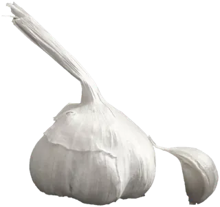
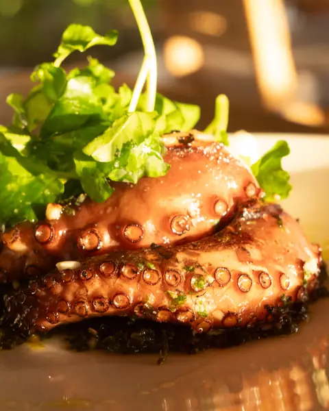

Tapas canarias para mojar en el casco antiguo del Puerto de la Cruz: mojo rojo picón, mojo verde y vino de Tenerife por copas.
Papas arrugadas 6,50 € precio de ejemplo
¿Rojo o verde?
Aquí todo se moja. Cada plato de la carta va con uno de los dos mojos, o con los dos. Elige bando y te lo marcamos en la carta.
Picón es el mojo que pica… y también la arena volcánica negra de las viñas canarias. Aquí hay de los dos.
Sin elegir: la carta entera, cada plato con su mojo.
La carta
Para mojar
-
Papas arrugadas con mojo rojo y verde
6,50 €
Papas chiquitas guisadas con mucha sal hasta que se arrugan. El motivo de todo esto.
-
Queso asado con mojo verde y miel de palma
9,00 €
Queso a la plancha, mojo verde por encima y un hilo de miel de palma.
-
Almogrote gomero con pan tostado
7,00 €
Queso curado majado con pimienta, ajo y aceite, para untar. Con un fisco de picón al lado.

De plancha y sartén al centro, pa’ compartir
-
Carne fiesta
9,50 €
Cerdo en adobo, frito, como en las fiestas de los pueblos. Con papas y picón.
-
Pulpo a la brasa con mojo picón
16,00 €
Pata de pulpo a la brasa, con papas y el picón por encima.
-
Chocos fritos
11,00 €
Choco en tiras, rebozado y frito, con limón y mojo verde para mojar.
-
Lapas con mojo verde
13,00 €
A la plancha en su concha, con el mojo verde chisporroteando. Se comen con los dedos.
De cuchara
-
Garbanzas de la abuela
8,50 €
Garbanzas compuestas, espesas, con su carne y su pimiento. Un fisco de picón por encima, si quieres.
-
Escaldón de gofio
6,00 €
Gofio escaldado con caldo caliente, cebolla roja y mojo picón. Muy de aquí.
Postres sin mojo, prometido
-
Quesadilla herreña
5,00 €
Pastel de queso fresco con anís y limón, como en El Hierro.
-
Bienmesabe
5,00 €
Crema de almendra, yema y limón. El nombre lo dice todo: me sabe bien.
Vino del país, por copas
Listán negro y listán blanco de las cinco denominaciones de origen de Tenerife. Pregunta cuál está abierto hoy: va rotando.
- Tacoronte-AcentejoNorte de la isla. La primera denominación de origen de Canarias, de 1992.
- Valle de La OrotavaAquí arriba, en el valle: viñas en cordón trenzado, que no se ven en ningún otro sitio.
- Ycoden-Daute-IsoraEl noroeste, de Icod de los Vinos a Guía de Isora.
- AbonaEl sur, con viñas de altura.
- Valle de GüímarLa cara este de la isla, en ladera.
Y sí: el fondo negro de esta parte es picón, la arena volcánica de las viñas. El otro picón.
Chico, ruidoso y sin manteles.
Treinta y cuatro sillas y ocho taburetes en la barra. Los viernes se oye desde la calle. Estamos en el casco, entre la Plaza del Charco y La Ranilla, el barrio de los pescadores.
Calle de la Hoya 12, 38400 Puerto de la CruzDirección de ejemplo: el enlace te lleva a la Plaza del Charco.
Abrir en Google MapsHorario
- Martes a domingo, noche
- 19:00–23:30
- Domingo, mediodía
- 13:00–16:00
- Lunes
- cerrado
Cómo pillar sitio
- 1 o 2 personas: a la barra, sin reservar. Ocho taburetes.
- 3 o más: pide mesa por WhatsApp con personas, día y hora. Te confirmamos nosotros.
- Viernes y sábado: pide con tiempo, que se llena.